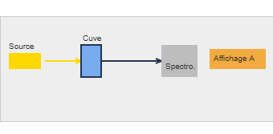
Détermination de la composition du système initial à l’aide de grandeurs physiques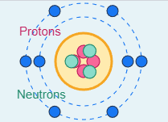
Comprendre la matière à l’échelle atomique et moléculaire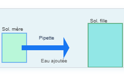
Quantités de matière et solutions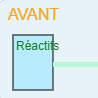
Réactions chimiques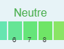
Espèces chimiques dans l’environnement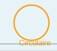
Description du mouvement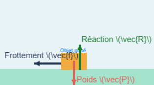
Forces et interactions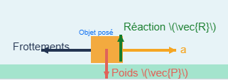
Lois du mouvement et modélisation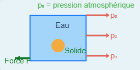
Statique des fluides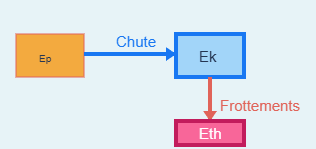
Différentes formes d’énergie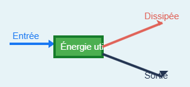
Conservation et transferts d’énergie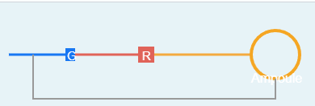
circuits électriques, phénomènes mécaniques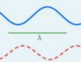
Propagation des ondes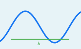
Caractéristiques d’une onde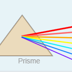
Ondes et lumière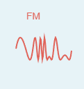
Transmission de signaux